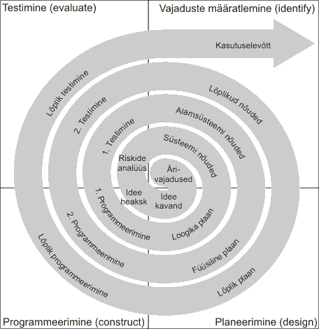

Spiraalmudeli kirjeldus
Spiraalmudelit kirjeldas esimest korda Barry Boehm oma 1986. aasta artiklis. Protsessi kulgemist kujutab spiraal, kus iga iteratsioon keskendub kindlale arendusetapile. Esimene kordus võib olla näiteks seotud süsteemi teostatavuse uurimisega, teine nõudmiste kirjeldamisega ja järgmised kavandamise ning realiseerimisega. Spiraalmudel on paindlik, kuid seda ei tohi võrdsustada tavapäraste arendusprotsessi faasidega.
Iga kordus jaguneb 3–6 sektoriks (sõltuvalt autorist). Iga kordus algab eesmärgi kavandamise ja riskide hindamisega ning lõpeb eesmärgi täitmise ja kontrollimisega. Spiraalmudelis on tegevuste maht ja järjekord paindlikud, kuid Boehm eristas neli peamist sektorit:
Peamised sektorid
- Eesmärkide seadmine (Objective setting): Määratakse korduse eesmärgid, piirangud, tulemused, juhtimisplaan, võimalikud riskid ja alternatiivsed strateegiad.
- Riskide hindamine ja maandamine (Risk assessment and reduction): Analüüsitakse ja maandatakse riske. Näiteks võib nõudmiste ebapiisavuse riski maandada prototüübi loomisega.
- Arendus ja valideerimine (Development and validation): Valitakse sobiv arendusmudel, mis aitab maandada hinnatud riske. Kui suurim risk on kasutajaliides, siis võib lahendus olla prototüüpide loomine.
- Planeerimine (Planning): Vaadatakse üle projekti edenemine ja tehakse otsus, kas jätkata järgmisel iteratsioonil. Kui jätkatakse, koostatakse uus plaan.
Spiraalmudeli näidisjoonis
Allpool on näide spiraalmudelist. Tegelik arendusprotsess võib varieeruda iteratsioonide arvu ja tegevuste paigutuse osas.
